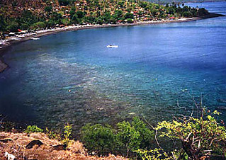
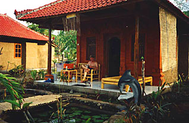
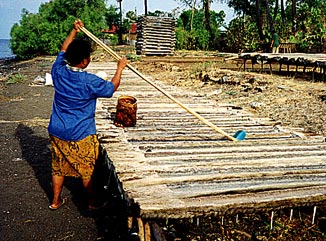
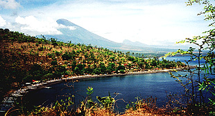

Sent: 29 Oct 99 05:32 PDT
web version, with
|

|
| Prior Trav-E-Log: Tidbits | Bali is ... coral and palms and outriggers.... |
(Note:) This is the 4th in a series of Trav-E-Logs sent while traveling in S.E.Asia between Oct 16, 1999 and Jan 22, 2000.Hi Folks,
Just returned from a snorkeling trip to Amed, Bali. A few travelers, as well as tour guides, had said it was the best snorkeling on the island, but difficult to get there. One of the persons I met at the Pondok Pecak Library, Tim from north of San Francisco, said he would also like to try it and invited me to go along with him and a  long-time Balinese family friend. Turns out, Tim has rented a car for the duration of his stay in Bali, and was already familiar with the road. Getting to Amed required driving down a road so badly potholed, the last few kilometers took over 20 minutes. This is good, as the less people go, the longer the coral is likely to last. But spread along the beach near the reefs are about a dozen places offering lodging, restaurant, boat, dive and scuba gear rental. And more are under construction. Once the road is re-paved, it will be too easy to get there, and the reef will be at risk.
The snorkeling was fantastic, with both plentiful tropical fish and beautiful coral. Together, I must estimate over 100 varieties of coral and fish. The coral reef was immediately off shore. In places one had to be careful not to touch the coral even while using the breaststroke. We swam no further than 500 feet offshore, where the maximum depth was about 18 feet. Every color of the rainbow can be found on just one fish! Some interesting things can be found in the deeper water, but there's so much to see at the 3 to 8 foot depth, we spent most of our time in this comfort zone. In the evening, which was high tide, we were able to swim directly to the beach in front of our hut. Took a few photos of the traditional salt making "industry" of the region, and of the fantastic scenery, from a cliff overlooking the coral bay. As coral was growing right up to the water's edge at low tide the next morning, we had to walk a ways down the beach to find a sandy spot to enter the water. We also noticed a good portion of the coral about 80 foot off shore was protruding out of the water due to the low tide.
Tim has been visiting Bali yearly for nine years, and even spent the better part of six months here on one of his trips. On the way to Amed, we stopped in Padangbai to visit the family he adopted on his first trip. After exchanging greetings, and dropping off his gifts, we picked up a forth for the trip, a cousin of the family. She is from Lombok, very shy, and on her first voyage away from home. Unfortunately, she did not venture into the water, choosing to just relax and enjoy the view.
Now it's time to hit the books again after this wonderful diversion.
Bill